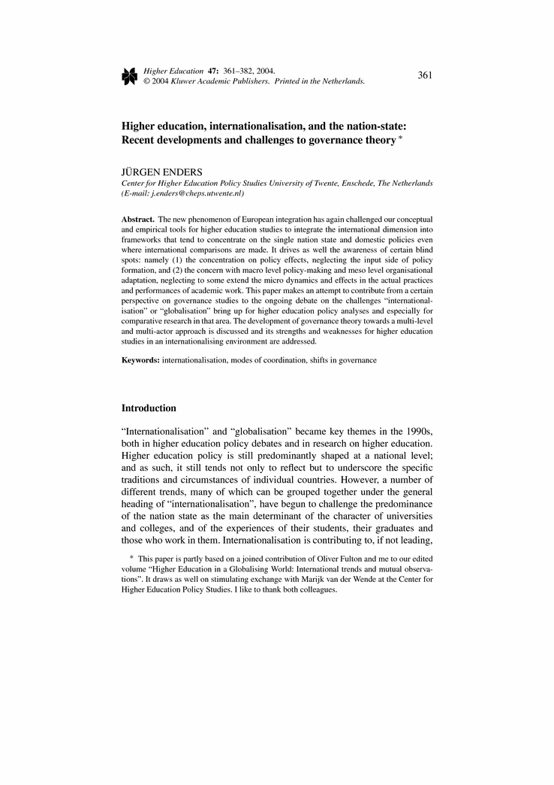
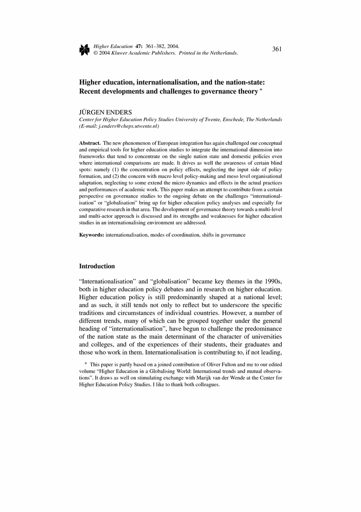

April 2004,
Volume 47,
Issue 3,
pp 361-382
Higher education, internationalisation, and the nation-state: Recent developments and challenges to governance theory
Abstract
The new phenomenon of European integration has again challenged ourconceptual and empirical tools for higher education studies tointegrate the international dimension into frameworks that tendto concentrate on the single nation state and domestic policieseven where international comparisons are made. It drives as wellthe awareness of certain blind spots: namely (1) the concentrationon policy effects, neglecting the input side of policy formation,and (2) the concern with macro level policy-making and meso levelorganisational adaptation, neglecting to some extend the microdynamics and effects in the actual practices and performances ofacademic work. This paper makes an attempt to contribute from acertain perspective on governance studies to the ongoing debate onthe challenges ``internationalisation'' or ``globalisation'' bringup for higher education policy analyses and especially for comparativeresearch in that area. The development of governance theory towardsa multi-level and multi-actor approach is discussed and its strengthsand weaknesses for higher education studies in an internationalisingenvironment are addressed.

 

 (1)
(1)